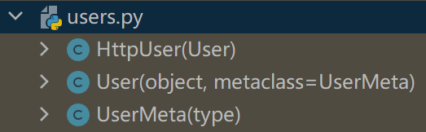
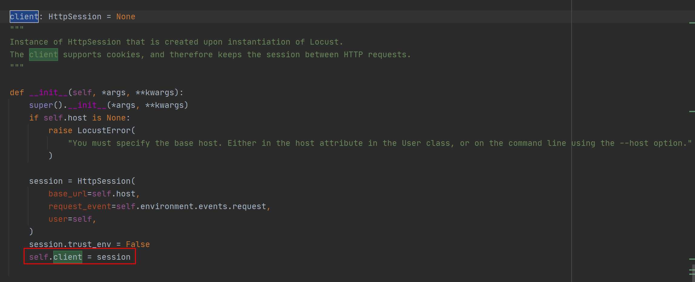
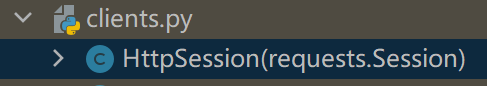

locustfile 是什么？
locustfile 是 Locust 性能测试工具的用户脚本，描述了单个用户的行为。
locustfile 是个普通的 Python 模块，如果写作locustfile.py，那么路径切换到文件所在目录，直接执行命令就能运行：
$ locust
如果换个名字，那么只能通过-f参数指定文件名运行：
$ locust -f locust_files/my_locust_file.py
与一般 Python 模块不同的是：locustfile 必须至少定义一个类，且继承自 User 类。
User 类
User 类表示性能测试的模拟用户，Locust 会在运行时创建 User 类的实例。
wait_time 属性
设置等待时间，默认值不等待，立即执行。
Locust 支持 4 种方式设置 wait_time 属性。
为了便于理解实际意义，我把源码贴在了下面。
-
constant函数，常量，任务执行完毕等待 X 秒开始下一任务。def constant(wait_time): """ Returns a function that just returns the number specified by the wait_time argument Example:: class MyUser(User): wait_time = constant(3) """ return lambda instance: wait_time -
between函数，区间随机值，任务执行完毕等待 X-Y 秒（中间随机取值）开始下一任务。def between(min_wait, max_wait): """ Returns a function that will return a random number between min_wait and max_wait. Example:: class MyUser(User): # wait between 3.0 and 10.5 seconds after each task wait_time = between(3.0, 10.5) """ return lambda instance: min_wait + random.random() * (max_wait - min_wait) -
constant_pacing函数，自适应，若任务耗时超过该时间，则任务结束后立即执行下一任务；若任务耗时不超过该时间，则等待达到该时间后执行下一任务。def constant_pacing(wait_time): """ Returns a function that will track the run time of the tasks, and for each time it's called it will return a wait time that will try to make the total time between task execution equal to the time specified by the wait_time argument. In the following example the task will always be executed once every second, no matter the task execution time:: class MyUser(User): wait_time = constant_pacing(1) @task def my_task(self): time.sleep(random.random()) If a task execution exceeds the specified wait_time, the wait will be 0 before starting the next task. """ def wait_time_func(self): if not hasattr(self, "_cp_last_run"): self._cp_last_wait_time = wait_time self._cp_last_run = time() return wait_time else: run_time = time() - self._cp_last_run - self._cp_last_wait_time self._cp_last_wait_time = max(0, wait_time - run_time) self._cp_last_run = time() return self._cp_last_wait_time return wait_time_func -
自定义
wait_time方法，比如每次等待时间 1 秒 2 秒 3 秒递增：class MyUser(User): last_wait_time = 0 def wait_time(self): self.last_wait_time += 1 return self.last_wait_time ...
weight 属性
设置创建类实例的权重，默认每个类创建相同数量的实例。
locustfile 中可以有多个继承了 User 类的类。
命令行可以指定运行哪些类：
$ locust -f locust_file.py WebUser MobileUser
通过 weight 属性可以让类更大概率创建实例，比如：
class WebUser(User):
weight = 3
...
class MobileUser(User):
weight = 1
...
WebUser 类比 MobileUser 类多三倍概率创建实例。
host 属性
设置 URL 前缀。
**一般是在 Locust 的 Web UI 或者命令行，通过--host指定 URL 前缀。**如果没有通过--host指定，并且类中设置了 host 属性，那么类的 host 属性才会生效。
environment 属性
对用户运行环境的引用。
比如在 task 方法中通过 environment 属性终止运行：
self.environment.runner.quit()
注意，单机会终止所有运行，分布式只会终止单个 worker 节点。
on_start 和 on_stop 方法
测试前初始化和测试后清理。
HttpUser 类
开篇文章的示例脚本，没有继承 User 类，而是继承了它的子类 HttpUser：

它比 User 类更常用，因为它添加了一个client属性，用来发送 HTTP 请求。
client 属性/HttpSession
HttpUser 类的 client 属性是 HttpSession 类的一个实例：

HttpSession 是requests.Session的子类，requests 就是常用来做接口测试的那个 requests 库：

HttpSession 没有对requests.Session做什么改动，主要是传递请求结果给 Locust，比如 success/fail，response time，response length，name。
示例：
response = self.client.post("/login", {"username":"testuser", "password":"secret"})
print("Response status code:", response.status_code)
print("Response text:", response.text)
response = self.client.get("/my-profile")
由于requests.Session会暂存 cookie，所以示例中登录/login请求后可以继续请求/my-profile。
断言响应结果
可以使用 with 语句和 catch_response 参数对响应结果进行断言：
with self.client.get("/", catch_response=True) as response:
if response.text == "Success":
response.success()
elif response.text != "Success":
response.failure("Got wrong response")
elif response.elapsed.total_seconds() > 0.5:
response.failure("Request took too long")
或者直接抛出异常：
from locust.exception import RescheduleTask
...
with self.client.get("/does_not_exist/", catch_response=True) as response:
if response.status_code == 404:
raise RescheduleTask()
name 参数
name 参数用于把不同 api 按同一分组进行统计，比如：
for i in range(10):
self.client.get("/blog?id=%i" % i, name="/blog?id=[id]")
会按/blog/?id=[id]统计 1 条数据，而不是分成 10 条数据。
HTTP 代理
Locust 默认设置了 requests.Session 的 trust_env 为 False，不查找代理，以提高运行性能。如果需要可以设置locust_instance.client.trust_env为 True。
示例代码
请求 REST API 并断言：
from json import JSONDecodeError
...
with self.client.post("/", json={"foo": 42, "bar": None}, catch_response=True) as response:
try:
if response.json()["greeting"] != "hello":
response.failure("Did not get expected value in greeting")
except JSONDecodeError:
response.failure("Response could not be decoded as JSON")
except KeyError:
response.failure("Response did not contain expected key 'greeting'")
小结
locustfile 是个普通 Python 模块，必须继承 User 类或其子类 HttpUser 等。本文对 User 类和 HttpUser 类的属性和方法进行了介绍，使用它们可以编写性能测试的用户脚本。locustfile 还有另外一个重要组成元素，@task。
参考资料：